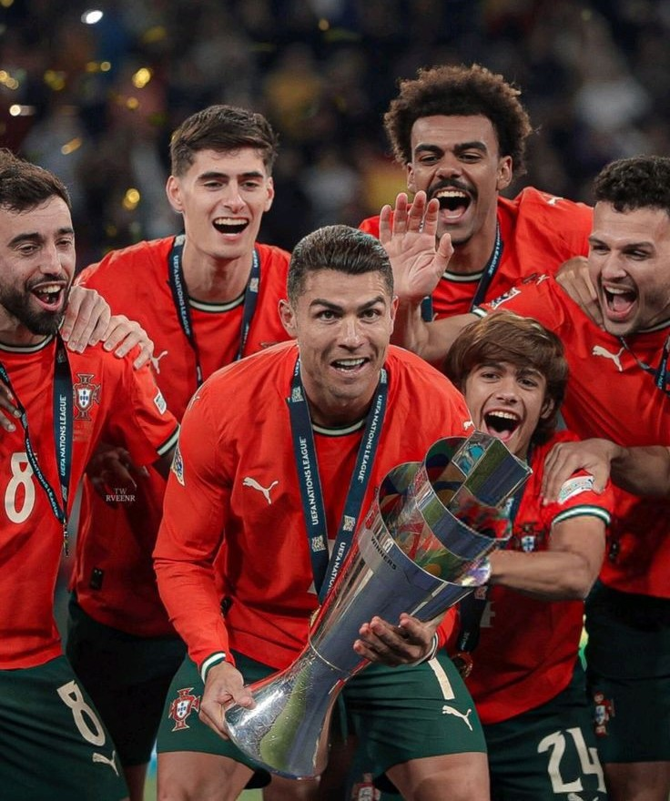
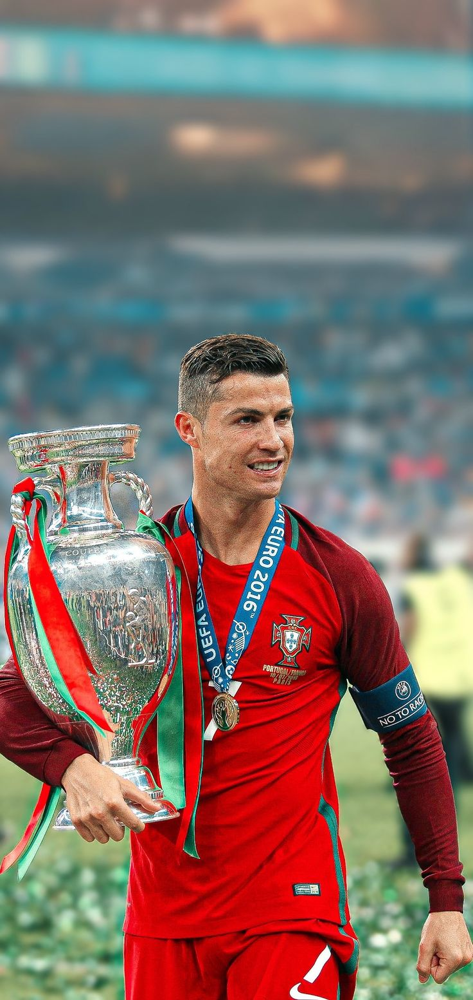
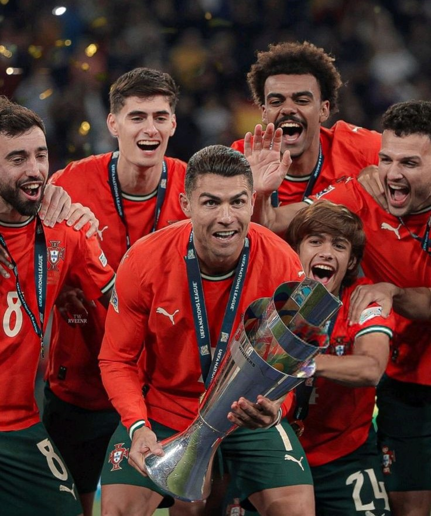
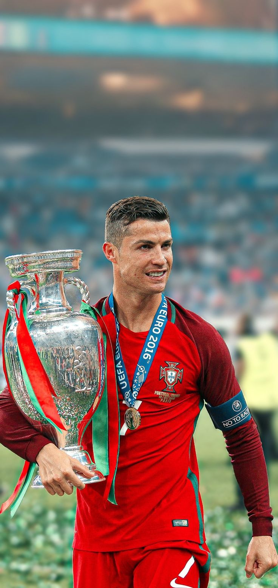

Bintang Tak Terbantahkan
Cristiano Ronaldo dos Santos Aveiro, seorang ikon sepak bola yang telah mendefinisikan ulang makna keunggulan.
Pelajari Lebih LanjutTentang Cristiano Ronaldo
Cristiano Ronaldo lahir pada *5 Februari 1985* di *Funchal, Madeira, Portugal*. Ia dikenal sebagai salah satu pemain terhebat sepanjang masa, memenangkan banyak penghargaan individu dan kolektif sepanjang kariernya.
Beberapa *momen penting* dalam kariernya meliputi:
Perjalanan Karier Klub
Sporting CP (2002-2003)

Mengawali karier profesionalnya di Sporting CP, Ronaldo dengan cepat menunjukkan bakat luar biasa dan menarik perhatian klub-klub top Eropa.
Jumlah Trofi: 1 (Supertaça Cândido de Oliveira)
Prestasi Individu: UCL Melawan Man United, penampilan yang menarik perhatian Sir Alex Ferguson.
Video Momen SportingManchester United (2003-2009 & 2021-2022)
Di bawah bimbingan Sir Alex Ferguson, Ronaldo berkembang menjadi salah satu pemain terbaik dunia, memenangkan Liga Champions dan Ballon d'Or pertamanya di sini.
Jumlah Trofi: 10 (termasuk 3 Premier League, 1 Liga Champions)
Prestasi Individu: Ballon d'Or 2008, PFA Player of the Year.
Video Momen Man UtdReal Madrid (2009-2018)

Era di Real Madrid adalah puncaknya. Ia menjadi pencetak gol terbanyak sepanjang masa klub dan memenangkan empat gelar Liga Champions.
Jumlah Trofi: 15 (termasuk 4 Liga Champions, 2 La Liga)
Prestasi Individu: 4 Ballon d'Or, pencetak gol terbanyak sepanjang masa Real Madrid.
Video Momen Real MadridJuventus (2018-2021)
Pindah ke Juventus, Ronaldo terus menunjukkan ketajamannya, membantu tim meraih gelar Serie A.
Jumlah Trofi: 5 (termasuk 2 Serie A)
Prestasi Individu: Capocannoniere (top scorer Serie A).
Video Momen JuventusAl Nassr (2023-Sekarang)

Petualangan barunya di Arab Saudi, membawa dampak besar bagi liga sepak bola di sana.
Jumlah Trofi: 1 (Liga Champions Arab)
Prestasi Individu: Top scorer Liga Pro Saudi (musim 2023-2024).
Video Momen Al NassrJumlah Seluruh Trofi Klub
Selama kariernya yang gemilang di berbagai klub, Cristiano Ronaldo telah mengumpulkan total *32 trofi kolektif* utama.
- Sporting CP: 1
- Manchester United: 10
- Real Madrid: 15
- Juventus: 5
- Al Nassr: 1
Ini belum termasuk penghargaan individu yang tak terhitung jumlahnya seperti Ballon d'Or, Sepatu Emas Eropa, dan berbagai gelar top scorer.
Video Aksi Ronaldo di Lapangan
Skill & Goals Terbaik Cristiano Ronaldo
Momen Legendaris Ronaldo di Liga Champions